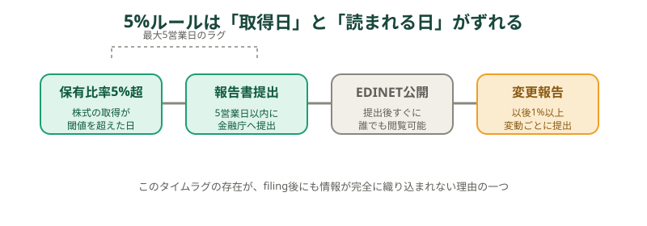
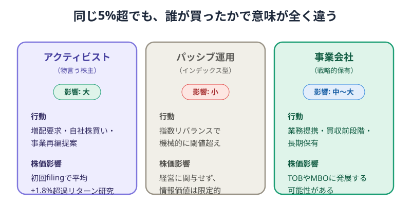
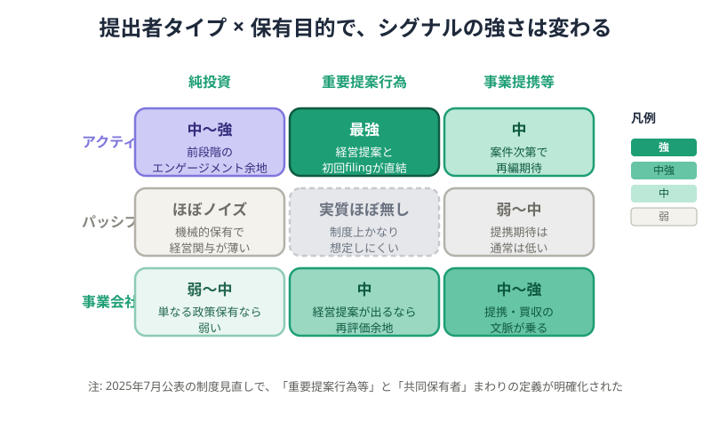
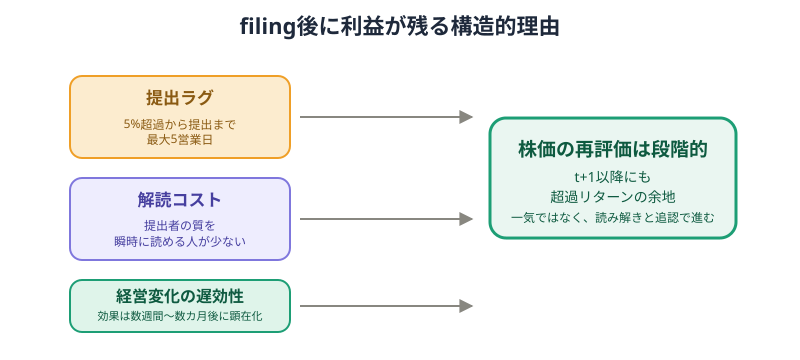
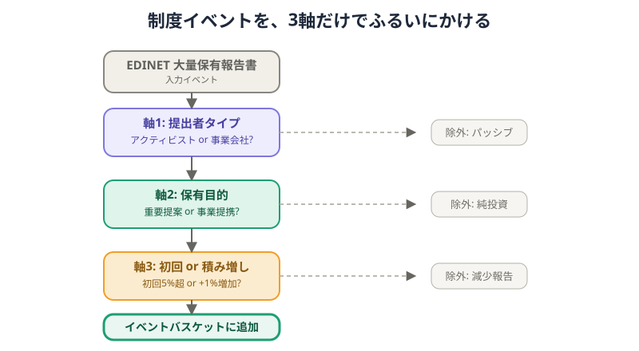
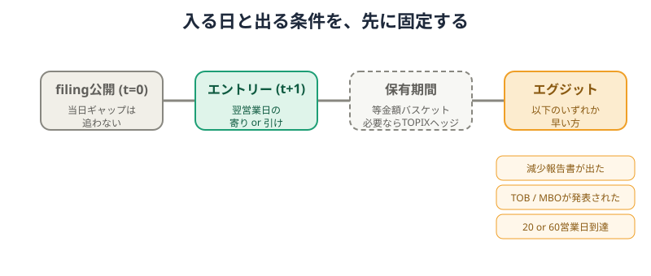
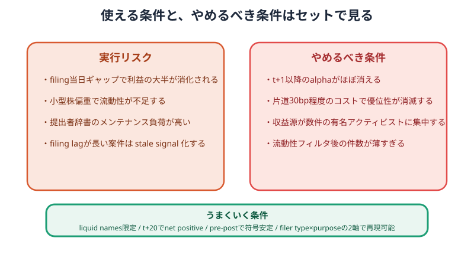

5%ルールを投資に活かす — 大量保有報告書の「誰が・なぜ」で見える株価シグナル¶
対象:
日本株に投資しているが、 大量保有報告書を投資判断に活用したことがない個人投資家。 なお、本記事は制度の仕組みと読み方の解説であり、 特定銘柄の売買を推奨するものではありません。
この記事のポイント¶
- 大量保有報告書は「誰かが本気で買っている」公開シグナルだが、 提出者のタイプと目的まで分解しないと使えない
- 「物言う株主が経営提案を視野に入れて初回提出」と 「指数連動ファンドが機械的に5%を超えた」では、同じ提出でも意味が違う
- 制度で定義されたイベントを使うため、 後から都合よく条件を足しにくく、過学習しにくい着眼点になりやすい
5%ルールでまず見るべきものは、数字そのものではない。 5%を超えた事実より、誰が、何の目的で、その時点で開示したのかである。 ここを分けて読むと、大量保有報告書は「ニュースの後追い」ではなく、 制度に埋め込まれたイベントとして扱いやすくなる。
1. 5%ルールとは何か — 制度の仕組みを30秒で理解する¶
大量保有報告書とは、 上場会社の株式を5%超保有した人や会社が、 保有割合や保有目的などを金融庁へ届け出る書類である。 個人投資家にとっては、 あとから公開される大口投資家の行動記録と考えると早い。 提出された書類はEDINETという金融庁の開示システムで 誰でも確認できる。1

重要なのは、 5%を超えた瞬間と、市場でその情報が広く読まれる瞬間が 同じではないことだ。 原則として提出期限は取得日から5営業日以内で、 その後も保有割合が1%以上動けば変更報告書が必要になる。1
このラグがあるため、公開情報であっても完全には同時反映されにくい。 しかも、EDINETに出た書類を読んで終わりではなく、 提出者の質を解釈する作業が残る。 ここから先が、 単なる制度説明と投資上の読み筋を分けるポイントになる。
2. 同じ「5%超」でも意味が全く違う — 提出者タイプの分解¶
同じ5%超でも、 株価に効きやすいのは「誰が買ったか」でかなり変わる。 ここでは提出者を、 経営に変化を迫る投資家、 指数連動で持つ運用会社、 事業上の思惑を持つ事業会社の3つに分ける。

経営に改善要求を出す投資家、 いわゆるアクティビストは、 買った後に増配や自社株買い、事業再編を求める余地がある。 そのため提出自体が「次の行動」を連想させやすい。 先行研究でも、 こうした投資家の初回5%超開示では平均+1.8%の短期異常リターンが 確認されているが、 これは当時の日本市場サンプルに基づく観察結果であり、 将来の収益を保証する数字ではない。2
一方、パッシブ運用は日経平均やTOPIXなどの指数に合わせて機械的に売買することが多い。5%超は起きても、そこから経営に圧力をかけるわけではないため、書類の情報価値は相対的に弱い。
事業会社は中間に位置する。 業務提携の布石なのか、 持ち合いなのか、 買収の前段階なのかで意味が変わるからだ。 つまり、大量保有報告書は 「5%を超えた」だけでなく 「この提出者は何をしに来たのか」を読む書類である。
3. 保有目的の記載が「格付け」になる¶
提出者タイプだけではまだ粗い。 もう一段効くのが、報告書の「保有目的」欄である。 これは言い換えると、 この保有が受け身なのか、 働きかけを伴うのかを示す制度上のラベルだ。
3.1 純投資 — 弱いシグナル¶
「純投資」は、値上がり益や配当を狙う通常の投資に近い。もちろん提出者が有力投資家なら無視はできないが、少なくとも文面上は経営への具体的関与を約束していないため、シグナルは弱い。
3.2 重要提案行為 — 最も強いシグナル¶
「重要提案行為」は、 配当政策や資本政策、組織再編などについて 会社側へ重要な提案を行う可能性を含む区分である。 平たく言えば、 ただ持つだけでなく、会社の意思決定に踏み込む意思がある と読めるため、市場の反応は最も強くなりやすい。23
3.3 事業提携等 — 文脈次第¶
「事業提携等」は、資本業務提携や買収準備の文脈では強いが、単なる関係強化で終わることもある。ここでは提出者が事業会社なのか、金融投資家なのかで意味が変わる。

2025年7月4日に金融庁は 大量保有報告制度の見直し結果を公表し、 「共同保有者」に当たらないための要件や、 「重要提案行為等」に該当する提案内容の範囲を明確化した。 施行日は2026年5月1日で、 誰と組んでいるか、どこまで踏み込む目的かを制度上読み分ける根拠は 以前よりはっきりしている。3
4. なぜ報告書が出た後にまだ利益が残るのか — 3つの構造的理由¶
公開情報なのに、なぜ提出後にも値動きの余地が残るのか。 答えは、情報が弱いからではなく、 解釈に時間がかかる種類の情報だからである。

第1に、提出ラグがある。5%を超えた日と提出日がずれるため、市場参加者は「いつから集めていたのか」を後追いで知る。
第2に、解読コストが高い。 EDINETの書類を開いても、 提出者名からアクティビストかパッシブかを即座に分類できる人は 多くない。 ここで辞書化やホワイトリスト化の価値が生まれる。
第3に、経営変化の効果は遅れて出る。 増配、自社株買い、事業売却、MBOやTOBの可能性は、 提出当日にすべて織り込まれるとは限らない。 つまり株価の再評価は一拍で終わらず、 段階的になりやすい。
5. この考え方を戦略に組み立てる — 3軸フィルタリング¶
この着眼点を戦略に落とすなら、 やることは複雑ではない。 提出者タイプ、保有目的、変化の種類の3軸で、 EDINETに出る案件をふるいにかける。

軸1は提出者タイプで、 アクティビストか事業会社を優先する。 軸2は保有目的で、 重要提案行為や事業提携等を優先し、 純投資は基本的に後順位へ回す。 軸3は初回5%超か、そこからの積み増しかで、 減少報告は除外候補になる。
この3軸を通した案件だけを、 等金額のイベントバスケットとして扱う考え方が実務的だ。 1件ごとの確信度で張るより、 制度イベントを同じルールで束ねる方が、 思い込みを減らしやすい。
filing公開当日に大きくギャップアップした銘柄を そのまま追う必要はない。 むしろ、初日の反応を見たうえで 翌営業日の寄りや引けに機械的に入る方が、 ルールとして再現しやすい。

出口も同じで、 減少報告が出たとき、 TOBやMBOのように別イベントへ移行したとき、 あるいは20営業日や60営業日のような固定日数に達したときに切る。 ここで大事なのは、 「将来どうなりそうか」ではなく、 どの制度イベントで入って、 どの制度イベントで終えるかを先に決めておくことだ。
6. 落とし穴と限界 — この手法が「使えなくなる」条件¶
この着眼点は、制度イベントを使うぶん自由度が低い。そこが長所でもあるが、同時にエッジが消える条件も見えやすい。

最大の実行リスクは、 filing当日のギャップで期待収益の大半が消えることだ。 小型株に寄ると売買コストと流動性不足でほぼ吸われるし、 提出者辞書の更新を怠ると、 アクティブとパッシブの取り違えが増える。
やめるべき条件も明確である。 t+1以降の超過リターンが観察できない、 片道30bp程度のコストで優位性が消える、 収益源が数件の有名提出者に集中する、 流動性フィルタ後の件数が薄すぎる。 このどれかに当てはまるなら、 制度イベントではなく、 単なる昔効いたパターンを追っている可能性が高い。
まとめ — 「公開書類の読み手の少なさ」に賭ける考え方¶
5%ルールを使う発想は、 「秘密情報を先回りする」ことではない。 公開されているのに、 読みに手間がかかる制度情報を、 提出者の質と目的で整理して読むことにある。
この意味で、大量保有報告書は確立済みの必勝法ではなく、 制度情報を使うイベントドリブン型アプローチの素材に近い。 個人投資家が賭けているのは、 報告書そのものの希少性ではなく、 公開書類を提出者辞書と保有目的で分解して読む人の少なさである。
最後に確認しておくと、 本記事は制度の仕組みと考え方の解説であり、 特定の銘柄や売買タイミングを推奨するものではない。 使うなら、 流動性、コスト、保有期間、提出者分類の更新を含めて、 再現可能なルールとして検証してから使うのが前提になる。
関連記事¶
- クオンツ戦略とは — 個人投資家が知るべき5つの戦略類型とAI活用の最前線
- 株価はどう決まる？ — 個人投資家が知るべき価格形成のメカニズム
- 出来高と流動性とは — 売買しやすさが価格に与える影響を理解する
金融庁は「大量保有報告書」を、 上場会社の株券等を発行済株式総数の5%超保有した者が提出する開示書類と説明し、 原則として取得日から5営業日以内の提出と、 EDINET等での公衆縦覧を案内している。 変更報告書の1%以上増減の運用は、 証券取引等監視委員会の勧告事例でも確認できる。 アクセスFSA 第31号、 株式会社三ッ星株式に係る大量保有報告書等の不提出及び変更報告書の虚偽記載に係る課徴金納付命令勧告について ↩↩
Yasushi Hamao, Kenji Kutsuna, Pedro Matos, U.S.-Style Investor Activism in Japan: The First Ten Years, October 21, 2010. 同論文は、 アクティビストによる初回5%超開示のイベントウィンドウ
(-5, +5)で 平均+1.8%のBHARを報告している。 ↩↩金融庁は2025年7月4日に大量保有報告制度見直しの結果を公表し、 「個別の権利の行使ごとの合意」の具体化、 重要提案行為等の範囲明確化、 みなし共同保有者の範囲見直し等を示した。 施行・適用日は2026年5月1日。 令和6年金融商品取引法等改正に係る政令・内閣府令案等に関するパブリックコメントの結果等について ↩↩